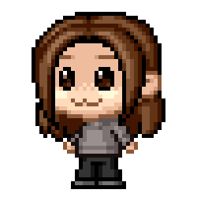

I'm a 19 year old student who studies Digital Culture at the University of Bergen. I already have knowledge about web design as I've studied IT previously. The subjects I study this semester include Culture and Norms in the Information Society and Web Design. I enjoy drinking coffee while studying. Espresso and macchiato are some of my favourite types of coffee. When not studying, I play games on either PC or console. Some of my favourite games at the moment are Call of Duty: Black Ops 4, Tekken 7 and Fortnite. I have yet to play the new Spiderman and Red Dead Redemption games. I also love movies and music of all genres. Drinking coffee is something I like to do while doing all of these things. This project has allowed me to express my love for games, coffee and web design. It has been a pleasure to work on this project with great people who share the same interests as me.
silent
info about silent

Wiwalla
Im a 22 year old student at UiB who studies IT. This semester I have 3 subjects - Social Web, Network
Securty and Web design 1. Im an active gamer, I play many different first person shooter games like Overwatch, Destiny and Counter Strike Global Offensive. Besides games
I also love anime and Japanese culture. That is something that all of us group members have incommon. We got together as
a group because of our hobby similarities. This website is a project we all enjoyed to make, and put peaces of our
hearts into.